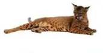
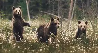

<div style="position: relative; width:100px;">
		<div style="position: absolute;">
			
			<div style="position: absolute; background-color: black; width:1000px; font-size: 15px;  top: 350px; color:white;">лежачий горячий штучка<br>Рысь — типичная кошка, хотя величиной с крупную собаку,<br> которую отчасти напоминает своим укороченным телом и длинноногостью.<br>Очень характерна голова рыси: сравнительно небольшая, округлая и очень выразительная <br><3 eee biths</div>
			
			<div style="position: absolute; background-color: black; width:1000px;  font-size: 15px; left: 300px;  top: 275px; color:white;">нахуй я так рано встаю не пойму<br>Бурый медведь или обыконовенное млекопитающее семейства медвежьих,<br>один из самых крупных наземных хищников и один из самых распространённых представителей семейства медвежьих.</div>
</div>